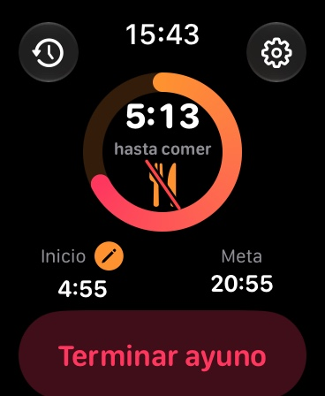
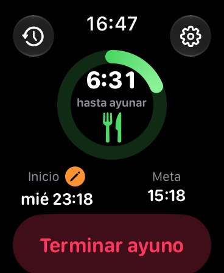
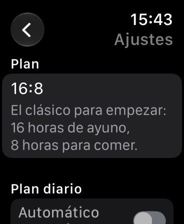
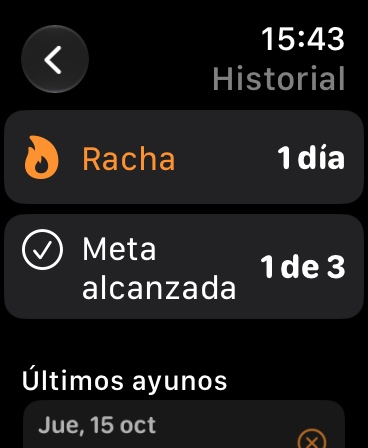

Ayuno intermitente en tu Watch
Inicia tu ayuno con un toque, mira el tiempo restante y la fase en la esfera y recibe un aviso suave cuando llegue la hora de comer. Sin cuenta, independiente del iPhone.




FastingTracker es el temporizador de ayuno intermitente sencillo para el Apple Watch. Todo funciona directamente en el reloj: independiente del iPhone, sin cuenta, sin anuncios.
Elige un plan, toca "Iniciar ayuno" y mira de un vistazo cuánto falta. Un anillo de colores muestra el progreso y la fase: ayuno, ventana de comida o listo.
Anillo, tiempo restante y fase directamente en la esfera: circular, esquina, rectangular y como línea de texto. El anillo avanza en directo sin exigir esfuerzo al reloj.
Si quieres, un aviso una hora antes de que termine el ayuno y al terminar, para que no se te pase el momento de comer.
Tus últimos 30 ayunos, tu racha actual y cuántas veces alcanzaste tu meta.
¿Empezaste tarde? Retrocede la hora de inicio a cuando empezaste de verdad.
Compra única, sin suscripciones, sin compras dentro de la app, sin anuncios. Todos los datos se quedan en tu reloj. Sin registro, sin analítica, sin seguimiento.
Aviso: FastingTracker no es un producto sanitario y no sustituye el consejo médico. El ayuno no es adecuado para todo el mundo, por ejemplo en caso de embarazo, trastornos de la conducta alimentaria, diabetes o bajo peso. Si tienes alguna enfermedad previa, habla antes con tu médico.